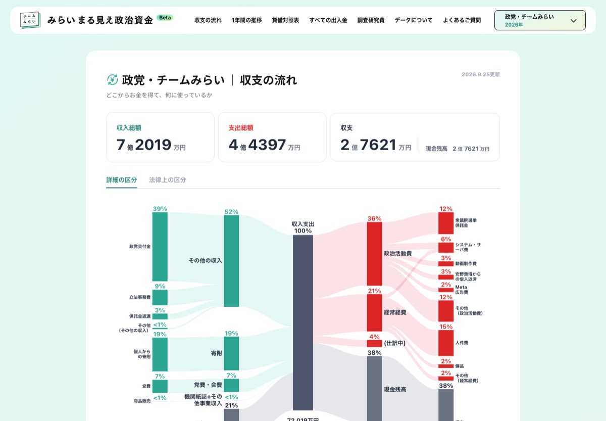
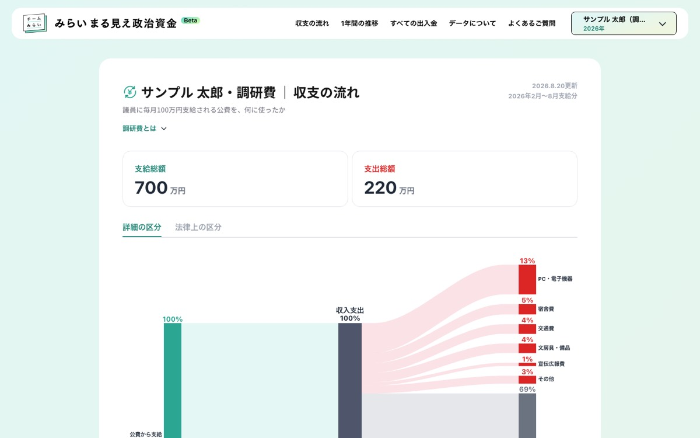
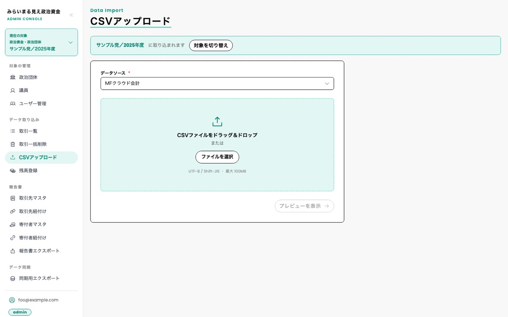
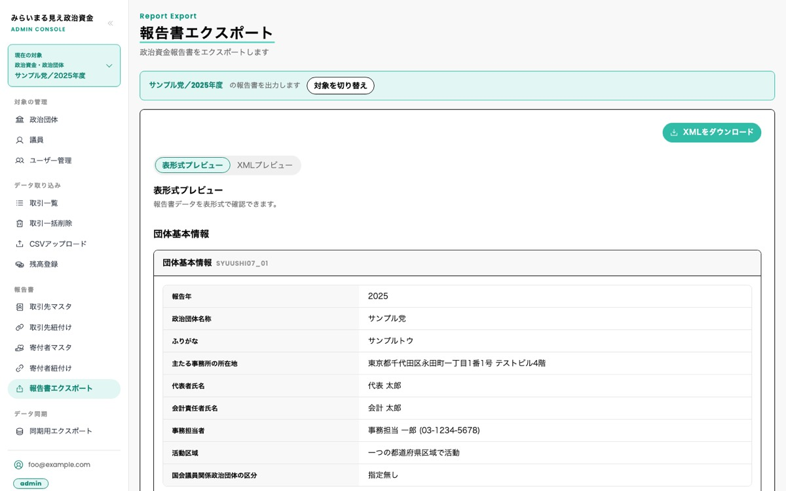
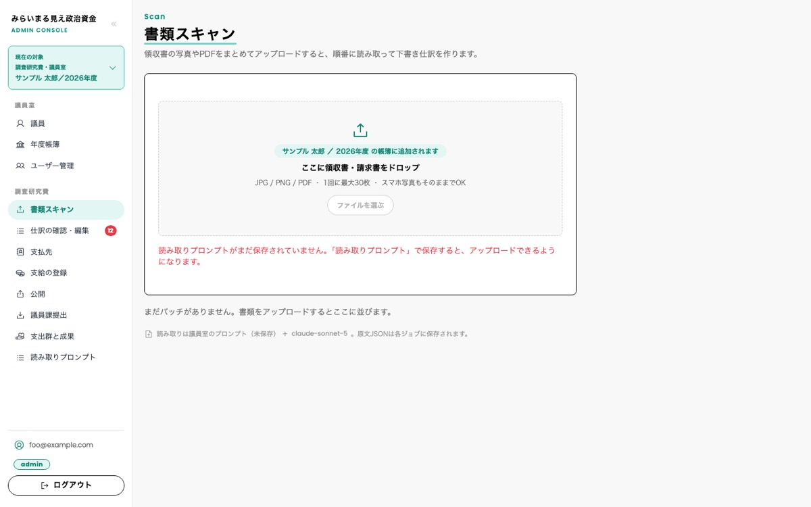
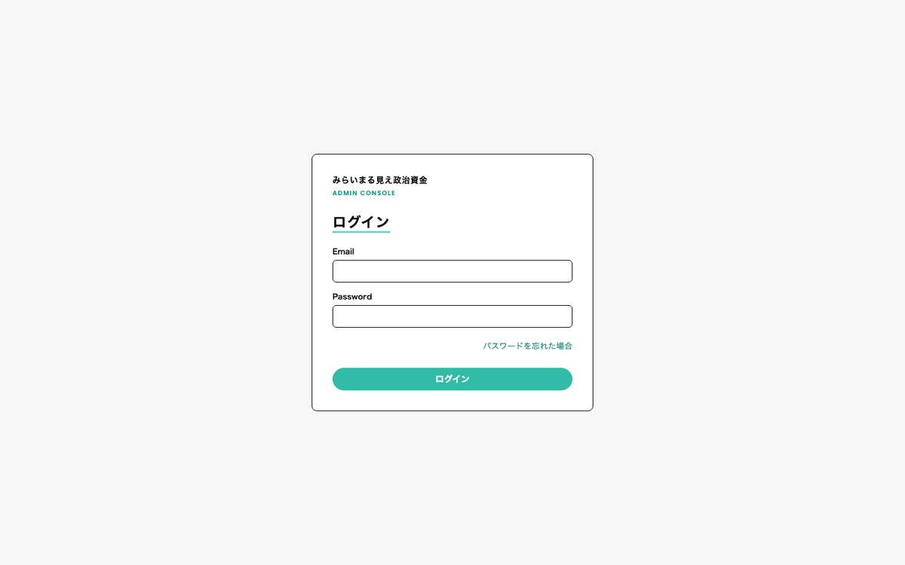

みらいまる見え政治資金の
中身をのぞいてみよう
政治団体や国会議員が「いくら受け取って、何に使ったか」を、だれでもグラフで見られるようにする Web アプリです。どんな部品でできていて、データがどう流れているのかを、順番に説明します。
main ブランチ（830f7b57、2026年10月6日）のコードをもとに作成

何をするアプリ？
政治団体は、毎年のお金の出入りを「政治資金収支報告書」という書類にまとめて国に出す決まりがあります。でもその書類は数字の表ばかりで、ふつうの人が読むのは大変です。
そこでこのアプリは、団体がふだん使っている会計ソフトのデータを取り込み、お金の流れを図やグラフにして公開します。さらに、国に出す報告書のデータ（XMLという形式のファイル）を作るお手伝いもします。
最近は、国会議員に支給される「調研費（ちょうけんひ）」の使い道を、領収書つきで公開する機能も加わりました（6章）。
このアプリは、じつは2つのWebアプリのセットです。
公開サイト
- 収入と支出の流れ図（サンキー図）
- 月ごとの収支グラフ
- 貸借対照表（いま持っている財産と借金）
- 取引の一覧表とCSVダウンロード
- 議員ごとの調研費の使い道と領収書
管理画面
- ログイン（パスワードで本人確認）
- 会計ソフトのCSVファイルを取り込む
- 取引先や寄附した人の情報を整理する
- 政治資金報告書のXMLを作る
- 領収書をAIで読み取って、調研費の帳簿を作る
全体の地図
アプリは、役割のちがういくつかのサーバー（クラウドサービス）の組み合わせで動いています。
領収書
大事なのは、データベースが1つだけということです。管理画面で書きこんだデータを、公開サイトが読みだして表示します。
プログラムの役割分担
- {webapp,admin}/src/server/contexts/{コンテキスト}/
- presentation/画面とのやりとり・ログイン確認
- loaders/サーバーコンポーネント用のデータ取得
- actions/保存などの操作（"use server"）
- application/
- usecases/処理の手順。1ファイル1つの仕事
- domain/政治資金のルール
- models/
- services/複数のモデルをまたぐ処理
- repositories/データの出し入れのインターフェース
- infrastructure/
- repositories/Prisma で DB を読み書きする実装
- presentation/画面とのやりとり・ログイン確認
業務ごとのコンテキストと、その画面です。shared/ はどのコンテキストからも使う共通部品（Prisma クライアントなど）です。

public-finance/政治資金を集計してグラフ用に整える
research-fund/議員ごとの調研費ページ
data-import/会計ソフトの CSV を取りこむ
report/取引先・寄附者の管理と報告書 XML
research-fund/領収書の読み取り・帳簿・提出用 CSV
auth/ログインと権限データを登録する流れ
団体のスタッフが、会計ソフトから出したCSVファイルを管理画面にアップロードしたとき、裏側では次のことが順番に起きています。
グラフが表示される流れ
市民がスマホで公開サイトを開いたときの流れです。URLは /o/団体名/2026 のような形になっています。
調研費と領収書AI
国会議員には、政治資金とは別に「調査研究広報滞在費（調研費）」というお金が毎月支給されます。このお金の使い道を、だれでも確かめられるように公開するのが新しい機能です。どんなお店で何に使ったかを、領収書の画像といっしょに見せます。
領収書は1年で何百枚にもなります。全部を人が手で打ちこむのは大変なので、ここでAIが活躍します。
データベースの中身
主なテーブルと、そのつながりです（全体の定義は prisma/schema.prisma）。
使っている道具
アプリはゼロから全部手作りしているわけではありません。世界中の開発者が作って公開している「道具（ライブラリ）」を組み合わせています。
ミスを防ぐしくみ
お金のデータをあつかうので、まちがいは許されません。そこで、プログラムを変更するたびに、機械が自動で何重にもチェックします。
| チェック | 道具 | 何を調べる？ |
|---|---|---|
| 小さなテスト | Jest | 「この計算に1000と2000を入れたら3000になる？」のように、部品ごとに答え合わせ |
| 通しのテスト | Playwright | ロボットが本物のブラウザを操作して、ログイン→アップロード→表示…を試す |
| 型チェック | tsc | TypeScript のルール違反がないか |
| 書き方チェック | Biome | 書き方の統一と、あやしい書き方の発見 |
| 使われていないもの | knip | だれも使っていないファイルや道具が残っていないか |
| 役割分担のルール | dependency-cruiser | 3章の「層」のルールを破って、画面の層がいきなりデータベースをさわっていないか |
| 段取りの形 | check:usecase-shape | 段取り（usecase）1つが1つの仕事だけを受けもっているか |
これらは pnpm verify という1つの命令でまとめて実行され、GitHubに送る前（push前）とGitHub上（CI）の両方で自動的に動きます。1つでも失敗すると、変更は取りこまれません。
さらに、すべての変更は AI のレビュー係（CodeRabbit）にもチェックされます。一部の決まった作業は、AIが自分でプログラムを書いて提案するしくみも動いています。最後に本番のサイトへ出すボタンを押すのは人間です。
用語集
- サーバー
- インターネットの向こうで、たのまれた仕事をするコンピューター。
- ブラウザ
- ChromeやSafariなど、Webページを見るためのアプリ。
- データベース
- データを整理して保存し、すばやく取りだせるようにした入れ物。
- CSV
- 表のデータを「,（カンマ）」で区切って書いたテキストファイル。Excelでも開ける。
- XML
- <名前>山田</名前> のように、タグでデータをはさんで書くファイル形式。報告書の提出に使う。
- キャッシュ
- 一度作った結果の控え。同じものをまた作らずにすむので速くなる。
- ライブラリ
- だれかが作って公開している、再利用できるプログラムの部品。
- トークン
- 「本物のお知らせです」と証明するための合言葉。
- サンキー図
- 線の太さで量を表しながら、どこからどこへ流れたかを描く図。
- 調研費
- 調査研究広報滞在費。国会議員に毎月支給される、調査や広報などのためのお金。
- 仕訳（しわけ）
- 「いつ・何に・いくら」を帳簿に書く1行のこと。
- プロンプト
- AIへの指示文。書き方しだいでAIの答えが変わる。
- CI
- 変更が届くたびに、自動でテストやチェックを走らせる仕組み。